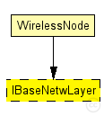
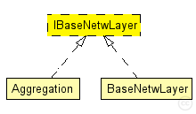

This documentation is released under the Creative Commons license
This documentation is released under the Creative Commons licenseInterface for network layer modules
The following diagram shows usage relationships between types. Unresolved types are missing from the diagram. Click here to see the full picture.
The following diagram shows inheritance relationships for this type. Unresolved types are missing from the diagram. Click here to see the full picture.
| Name | Type | Description |
|---|---|---|
| WirelessNode | compound module |
Standard host module for a wireless MiXiM host with configurable NIC, and OSI layers, and mobility module. |
| Name | Type | Default value | Description |
|---|---|---|---|
| stats | bool |
stats switch |
|
| headerLength | int |
length of the network packet header (in bits) |
// Interface for network layer modules moduleinterface IBaseNetwLayer { parameters: bool stats; // stats switch int headerLength @unit("bit"); // length of the network packet header (in bits) gates: input upperLayerIn; // from application layer output upperLayerOut; // to application layer input upperControlIn; // control from application layer output upperControlOut; // control to application layer input lowerLayerIn; // from NIC output lowerLayerOut; // to NIC input lowerControlIn; // control from NIC output lowerControlOut; // control to NIC }
This documentation is released under the Creative Commons license